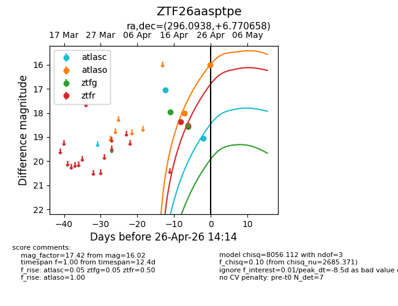
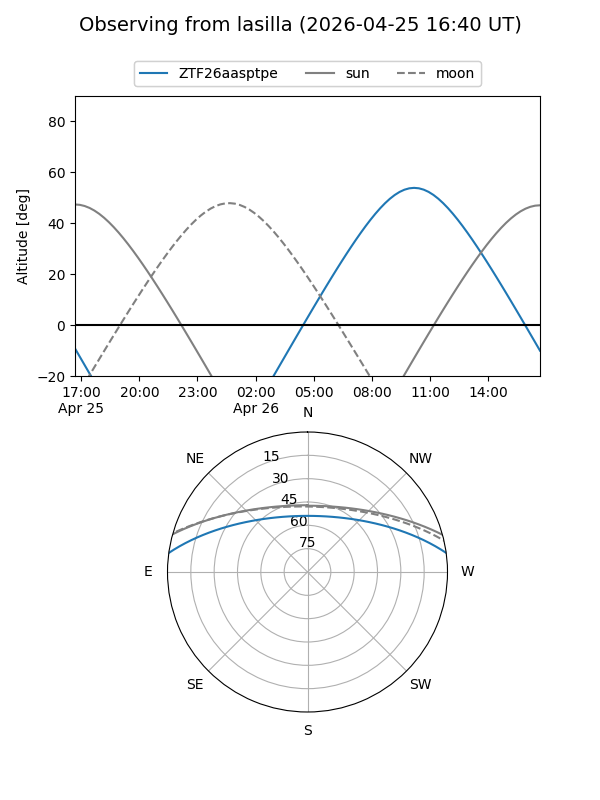
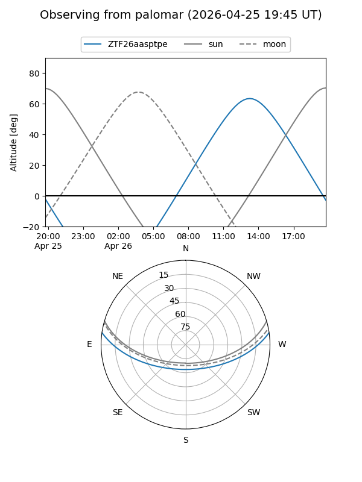
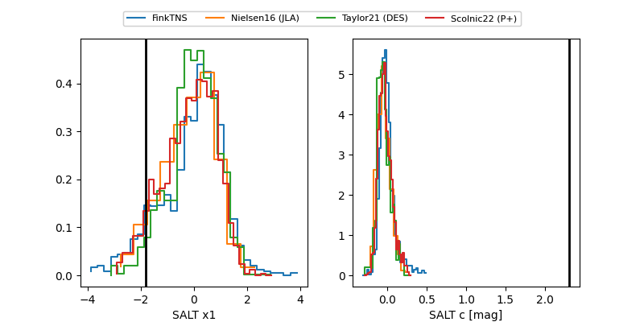

ZTF26aasptpe
Target ZTF26aasptpe at 2026-04-26 14:15
Aliases and brokers:
FINK: link
Lasair: link
ALeRCE: link
alt names
ZTF26aasptpe (ztf,fink_ztf)
Coordinates:
equatorial (ra, dec) = 296.0938,+6.77066
equatorial (HMS+DMS) = 19:44:22.51,+06:46:14.37
galactic (l, b) = (45.1087,-8.54403)
Flags:
Photometry:
last atlasc=19.06, atlaso=16.02, ztfg=18.56, ztfr=18.37
2 atlasc, 2 atlaso, 2 ztfg, 1 ztfr detections
Lightcurve

Visibility


Additional plots
